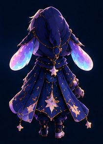

Experiment 1
Rewind the minute
Tap Move time to travel through three moments. Look for the detail that changes between loops.
123
Moment 1: the clock ticks backward. Ready when you are.
This is a story puzzle, not a real timer.
A character portfolio you can investigate
“Yesterday left me a warning.
Tomorrow left me a trap.”
New here? No puzzle-solving experience needed. The website tells you what to tap at every step.
The lantern clock has no hands.
It is ticking backward.
Character profile
The Last Dream Wanderer. A small, poised Veyling who walks through forgotten dreams and broken timelines.
Curious
Kairo notices a strange symbol or an unexplained event.

Same hood, same ears, same lantern from every angle.
The shadow looks almost normal at first. Then you notice it moved one second early. Kairo has not explained why. Kairo has not remembered why.
Optional discoveries · no experience needed
These are small, self-contained experiments. Read the instruction on each card, try it, and follow the result. You can skip all of them and enjoy the main story.
Move your pointer over Kairo, or tap the character on a phone. The eyes follow your movement. Nothing is being recorded or sent anywhere.
Experiment 1
Tap Move time to travel through three moments. Look for the detail that changes between loops.
Moment 1: the clock ticks backward. Ready when you are.
This is a story puzzle, not a real timer.
Experiment 2
The reflection does something impossible. Choose what you think happened. You can try again without losing progress.
Hint: remember Kairo's unusual shadow.
Experiment 3
A broken terminal left a six-letter warning. Enter the word Kairo's shadow keeps trying to tell you.
Hint: the word describes the thing that moves one second early.
Experiment 4
Choose a place to jump to that part of the story. Your saved clues stay in the notebook.
You can revisit places at any time. The map does not spoil the ending.
Your detective theory
Write a theory while you investigate. It is saved only in this browser, so it stays private on this device.
Your notes stay on this device. You can change them at any time.
Your journey
Make a little summary of your discoveries and choices. You can copy it or share it after you finish.
The report includes story progress only, not your name or device details.
Optional atmosphere
A gentle, generated clock ambience. It only plays after you start it and stops when you turn it off or mute sound.
The mystery
Eight short scenes. Click the glowing clues, collect them in the notebook, and decide what to do with the thirteenth bell.
Skip the story and view the portfolio at any time. You can also jump to any scene below.
First time here?
Think of this as an interactive storybook. You do not need to guess the answers.
Start with the story text at the top.
Follow the blue “What to do here” hint. Tap the clock, bird, drawing or button it names.
Clue buttons turn into ✓ when found. They appear in your Detective Notebook.
Use the large gold button at the bottom. Missing clues will not block you.
Kairo's workshop
These are fictional inventions from Kairo's world, built here as small working demos. Open one and try it. No story required.
Evidence
Every clue you find lands here. You do not need all twelve to understand the story.
0 of 12 clues found
Tip: use “Connect with…” on a clue to test whether two clues belong together.
12 Unforgettable Experiences
Explore Kairo's interactive lantern artifact, compose melodies in the Lullaby Lab, play the time-weave reflex challenge, and converse with the Last Dream Wanderer.
“Every step you take in Stillhour leaves an impression in the timeline.”
Interactive Reliquary
Drag with your mouse or finger to orbit the wireframe artifact.
Canvas-based pseudo-3D wireframe; no external library or server required.
Acoustic Lab
Synthesised with the Web Audio API. Enable site sound first.
Timeline Reflex
Catch drifting memory shards before the 30-second loop collapses.
Move the gold lantern bar to catch falling shards.
Chrono-Terminal
Decode the encrypted signal with a timeline keyword.
Transmission locked: Enter cipher key.
Investigation Dossier
Compile your investigation path and connected deductions into a local report.
Generated in this browser; copy it yourself if you want to share it.
Archive Riddle
“What survived when all else was forgotten?”
This is a local puzzle; results are not shared worldwide.
Character Interaction
A local rule-based dialogue engine, not an online AI service.
Community corner
Leave a short note for Kairo.
Nothing here yet. Yours could be the first note.